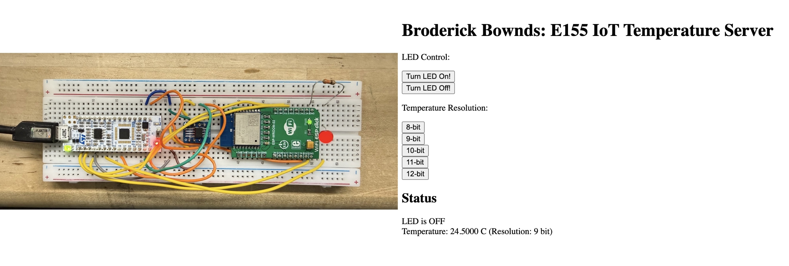
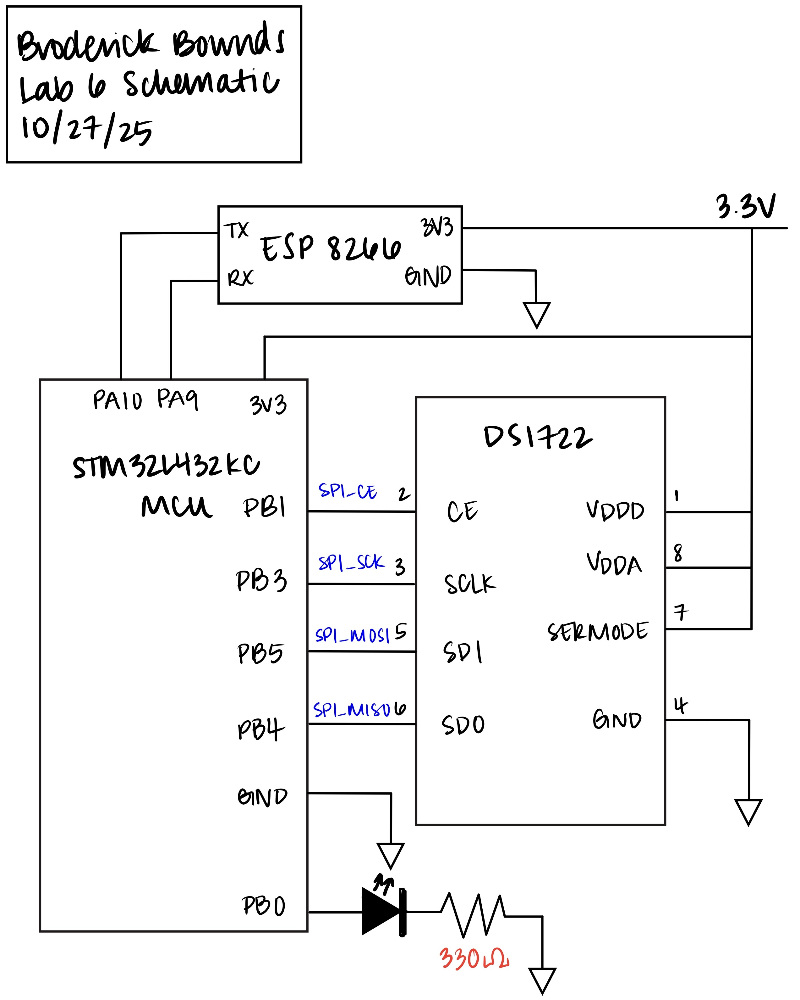
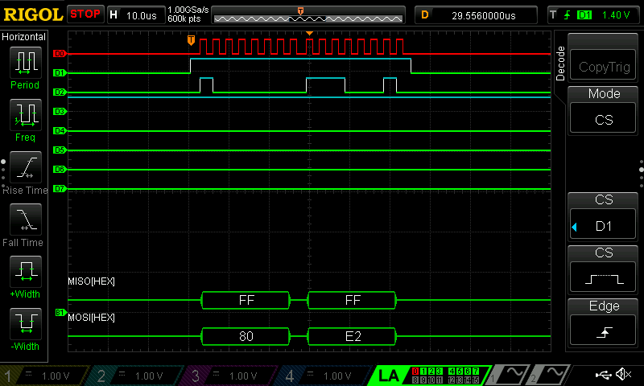
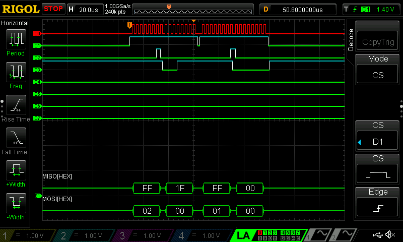
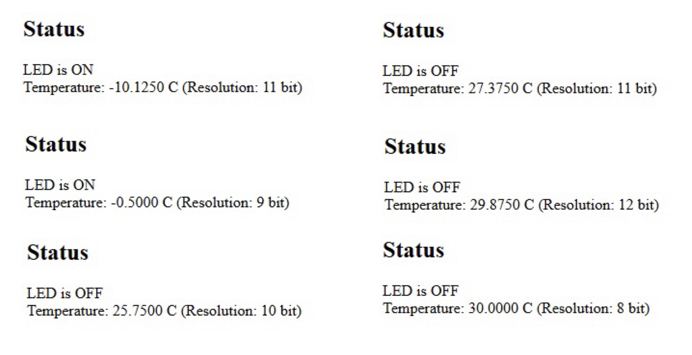

The Internet of Things and Serial Peripheral Interface

Introduction
In this lab, an Internet of Things (IoT) device was built using the STM32L432KC microcontroller, DS1722 temperature sensor, and ESP8266 WiFi module. The system measures ambient temperature and allows users to toggle an onboard LED through a web interface. The MCU communicates with the DS1722 via SPI and the ESP8266 via UART, using custom CMSIS-based drivers. This project demonstrated SPI communication, web-based data display, and hardware-software integration in an embedded system. By verifying signal timing with a logic analyzer and serving live temperature data over WiFi, I implemented a fully functional MCU-controlled IoT sensor node.
Design and Testing Methodology
The system was designed using custom CMSIS-based libraries for SPI, GPIO, and UART communication. The SPI library initializes the STM32L432KC’s SPI1 peripheral by configuring its clock source, baud rate, polarity, and phase (CPOL = 0, CPHA = 1), ensuring compatibility with the DS1722 sensor’s active-high chip enable behavior. A dedicated temperature sensor library was built on top of the SPI driver providing functions to set resolution (8–12 bits) and read temperature data through two’s-complement conversion.
The DS1722 was wired in standard 4-wire SPI mode, with SPI_CE, SPI_SCK, SPI_MISO, and SPI_MOSI connections verified on a logic analyzer. The analyzer confirmed correct clock polarity, phase, and timing between transmitted and received bytes. To validate functionality, temperature readings were observed through UART printouts at varying conditions—room temperature, finger contact, and cooling with compressed air. These tests confirmed accurate and responsive behavior across the expected range.
Technical Documentation
The source code for the project can be found in the associated GitHub repository.
Schematic

Verifiying Results
To verify correct SPI operation, the oscilloscope’s logic analyzer was used to monitor SPI_CE, SPI_SCK, SPI_MOSI, and SPI_MISO during temperature reads. The captured traces confirmed proper chip enable timing, correct clock polarity and phase, and expected byte sequencing for MSB and LSB transfers.

byte = 0xE0 indicates that the sensor was at 8-bit resolution.
config = 0xEE shows that the sensor was set to its highest resolution.The DS1722’s output was further validated by simulating temperatures from –10 °C to 30 °C in 10 °C increments while testing all resolutions from 8-bit to 12-bit. As the resolution increased, fractional precision improved, and the measured values closely matched the expected two’s-complement temperature codes from the datasheet.

Conclusion
This lab demonstrated successful SPI communication between the STM32L432KC microcontroller and the DS1722 digital temperature sensor. The sensor’s configuration and data transfer were verified using both serial output and logic analyzer traces, confirming correct clock timing, chip-enable behavior, and data alignment. Temperature readings were accurate across a range from –10 °C to 30 °C, with increasing precision observed from 8-bit to 12-bit resolution. Although UART communication with the ESP8266 proved unreliable, the MCU implementation met the key objectives of SPI functionality, temperature measurement, and data formatting for IoT applications. I spent 31 hours on this lab.
AI Prototype Summary
I used Microsoft’s CoPilot to help design both my web interface for displaying temperature data and the firmware function that retrieves that data from the DS1722 sensor over SPI on the STM32L432KC. The LLM produced functional, readable code that matched my setup, and its explanations helped me verify my own reasoning—particularly in the areas of SPI timing, CMSIS register usage, and manual chip-select control. I would rate the quality of the output as high The generated HTML dashboard was immediately usable: it was responsive, clean, and well-commented.
The C code for the SPI transaction was also well-structured—it adhered to CMSIS conventions. However, the one area I had to modify was peripheral initialization: the function assumed SPI1 was already configured, so I had to add setup code for the GPIO and SPI mode. Overall the LLM did better than mediocre which is not unusual.